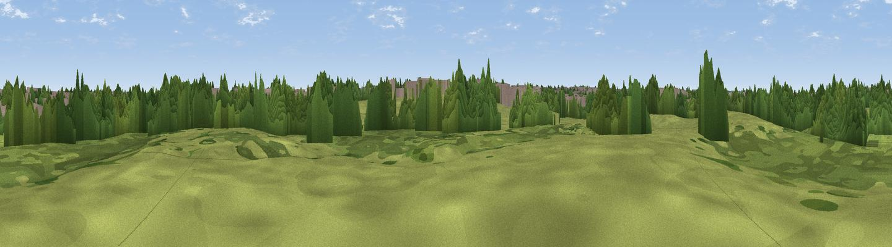

Highest Point
#45694 in England · top 97% of its area beats it · near AnstyWhere it is
The exact computed spot (SP 37006 80790). Click the marker for map links.
The view, rendered

A 360° render of this exact spot computed from the terrain model, tree cover and land cover — summer colours, afternoon light, calibrated against photographs of famous viewpoints. Real trees, hedges and buildings will differ in detail.
The panorama
Grey silhouette: terrain skyline in each direction (720 bearings, Earth curvature and refraction included). Dashed green: skyline with trees (+15 m) and buildings (+8 m) as obstacles. Blue strip: how far the ground is visible on each bearing.
Where the view opens
Wedge length = distance to the farthest visible ground on that bearing (vegetation-aware). Rings at 10, 25 and 50 km.
What fills the view
41% woodland · 29% built-up · 28% grassland · 2% cropland
Angular shares of the visible panorama (visual magnitude), not map area. Landscape diversity 0.51 (0–1 Shannon).
Key numbers
More beautiful places nearby
The staircase of upgrades: each row has a higher view potential than everything closer. Driving times are estimates from straight-line distance, calibrated against real road routing — check an actual route before setting out.
| Place | Direction | Drive | Score |
|---|---|---|---|
| Viewpoint near Ansty | E · 2 km | ~6 min | 27.8 |
| Viewpoint near Ash Green | NW · 6 km | ~12 min | 31.2 |
| Brinklow Castle | E · 7 km | ~14 min | 41.8 |
| Wood End Hill | WNW · 12 km | ~22 min | 50.0 |
| Mount Jud | N · 12 km | ~23 min | 62.4 |
| Viewpoint near Ansley Common | NNW · 15 km | ~26 min | 63.1 |
| Viewpoint near Ansley Common | NNW · 16 km | ~28 min | 69.0 |
| Viewpoint near Northend | S · 29 km | ~46 min | 69.7 |
52.42385, -1.45724 · source: osm viewpoint · position refined by local search. Computed location — check access rights before visiting.